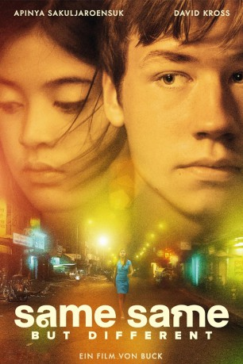

#2142 Same Same But Different
 
 IMDB-Wertung: 6.8 / 10
IMDB-Wertung: 6.8 / 10  Metascore: 0
Metascore: 0 
Überschreitet man die Grenze nach Kambodscha, akzeptiert man Dinge, die man vorher nie für möglich gehalten hätte. Hier hat ein einziger Moment die Kraft, das ganze Leben für immer zu verändern. Auf seiner Asienreise verliebt sich ein junger Deutscher in eine junge Kambodschanerin, die als Bargirl in einem Nachtclub arbeitet. Als sich herausstellt, dass sie HIV-positiv ist, muss er sich entscheiden. Kann es für sie eine gemeinsame Zukunft geben?
Jahr: 2009
Dauer: 107 Minuten
FSK: 6
Land: Deutschland Studio: Delphi Filmverleih ProduktionTonspuren:
Untertitel: Deutsch,
Auflösung: 1080p (1920x816) Größe: 9175 MB
Genre: Drama
Regisseur: Detlev Buck
Drehbuch: Ruth Toma, Michael Ostrowski, Detlev Buck, Benjamin Prüfer
Soundtrack: Konstantin Gropper, Bert Wrede
Darsteller:
 David Kross als Ben
David Kross als Ben- Jan Niklas Berg als Chris
 Anatole Taubman als Hotel Manager
Anatole Taubman als Hotel Manager- Michael Glawogger als Guest Gala Dinner
- Apinya Sakuljaroensuk als Sreykeo
 Jens Harzer als Henry
Jens Harzer als Henry- Stefan Konarske als Ed
- Houn Pilot als Tuk-Tuk Driver Soth
- To Savan als Old Teethless Man
- Srey Thoy als Garbage Girl
- Marie Jung als Regula
- Lucile Charlemagne als Marie
- Michael Ostrowski als Alex
- Pisey Hak als Dealer Guesthouse
- Chanthoun Kien als Security Nightclub
- Siyan Hout als Nightclub Girl
- Rotanak Oudom als Massage Boy Nightclub
- Kwanlar Nyirady als Billard Queen
- Tan Srey Neth als Rottana
- Rith Volak als Cheamney
- Tol Kunthea als Medical Office Nurse Phnom Penh
- Hout Sithorn als Medical Office Doctor Phnom Penh
- Chab Kola als Jeweller Seller
- Ok Sokha als Sreykeo's Mother
- Wanda Badwal als Lilli
- Anne Müller als Intern Claudia
 Mario Adorf als Publishing Director Mr. Behr
Mario Adorf als Publishing Director Mr. Behr- Daniel Nocke als Mr. Müllerhofen
- Rasmey Kep als Kep
- Cheamney Sorvan als Karaoke Girl
- Haik Zarian als Dr. Marlow
- Danich Kouy Chan als Girl on Boat
- Ben Tan als Clinic Doctor Bangkok
- Tarinee 'Aoi' Thaima als Burger Seller Bangkok
- Wenka von Mikulicz als NGO Staff Jutta
- Sarin Kath als Shoepolisher Boy
- Paul Oberle als NGO Staff Paul
- Chniny Chhing als Dary
- Phich Bun Ly als Brother Nak
- Em Boun Nat als Sreykeo's Father
- Julia Primus als Vanessa
- Charly Hübner als Customer Hajo Shober
- Olli Dittrich als Ben's Father
- Gilla Cremer als Ben's Mother
- Constanze Becker als Sybille
- Mary Wilson als Rachel Wilson
Datei: X:\2009(N-Z)\Same Same But Different (2009, FSK6, 1920x816).mkv seit 08.10.2015
Festplatte: HD 2009(G-Z)-2010(A-F)
 Es gibt insgesamt 99 Filme in der Gruppe '2009(N-Z)'
Es gibt insgesamt 99 Filme in der Gruppe '2009(N-Z)'